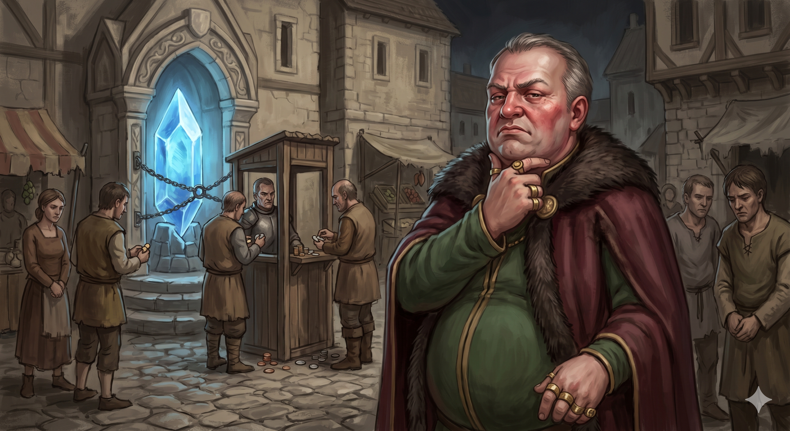

Appears in: Couch Potato Chaos
Profile

- Appears in: Couch Potato Chaos
- Aliases: Lord Hempledon, Hempledon
- Role: Feudal lord of Wilmarth; local tyrant who exploits game-mechanical systems for personal profit
- Personality: Lord Hempledon is a petty tyrant whose power derives not from noble birthright but from the intersection of wealth, superior level, and control over essential game-mechanical infrastructure. His title is described as “honorary” — the real authority comes from being higher-leveled and richer than everyone else in his domain, a blunt demonstration of how Etheria’s game systems can be weaponised for feudal exploitation. He monetises basic survival infrastructure: charging citizens for access to the save point and NPC services, and extracting an 80% cut of GP from mist monster hunts. This makes him a living illustration of one of the series’ central themes — the human cost of game systems — showing how save points and level differentials can create power structures as oppressive as any hereditary monarchy. His treatment of Pan, Ari, and Marina (who lived under his jurisdiction in Wilmarth) is explicitly described as exploitative and threatening, placing him in the role of a local antagonist whose cruelty is small-scale but personally devastating to those beneath him.
- Backstory: Lord Hempledon rules — or more accurately, extorts — the settlement of Wilmarth, a human settlement connected to [Mad Marina](./character-mad-marina.html), Pan’s childhood, and local lordship politics. His authority is a pure expression of game-mechanical power: his superior level makes him untouchable by ordinary citizens, and his control over the save point gives him effective power of life and death over anyone who needs respawn access. His economic model — paywalled save-point access and an 80% tax on the primary local income source (mist monster hunts) — is parasitic but sustainable, extracting maximum value from the community while providing the minimum infrastructure necessary to keep people alive and productive. He is identified as the local oppressor in Ari, Pan, and Marina’s backstory: the authority figure who made their lives in Wilmarth difficult enough that Marina’s house-bombing escape plan became a reasonable proposition.
- Significant story events:
- Pan and Ari’s childhood in Wilmarth (pre-series): Hempledon’s exploitative rule defines the environment in which Pan, Ari, and Marina live. His control over the save point and his extraction of wealth from the community create the conditions that make Wilmarth a place worth escaping.
- Chapter 27 — [Mad Marina](./character-mad-marina.html) and the Phantom Child (Chaos): Referenced through Marina’s escape from Wilmarth. Marina blows up her own house rather than let Hempledon get his hands on her research — a statement about how threatening his authority is to those who defy him.
- Notable Quotes:
[No direct quotes from Lord Hempledon are recorded in the wiki. He is described through other characters’ reactions — Ari and Pan identify him as an enemy and oppressor, and Marina prefers to destroy her own home rather than let him seize it. Any direct dialogue would need to be sourced from the relevant chapters of Couch Potato Chaos.]
- Relationships:
- [Ari / Aralogos Branford](./character-ari-aralogos-branford.html): Enemy and oppressor. Hempledon exploited and threatened Ari during his years living in Wilmarth.
- [Pan / Panella Branford](./character-pan-panella-branford.html): Enemy and oppressor. Hempledon’s exploitative rule contributed to the difficult conditions of Pan’s childhood.
- [Mad Marina](./character-mad-marina.html): Antagonist. Marina destroys her own house rather than let Hempledon seize her research, demonstrating the extent of her determination to escape his jurisdiction.
- Citizens of Wilmarth: Subjects and victims of his monetised game-mechanical tyranny. He charges them for save-point access, NPC services, and takes 80% of their mist monster hunt earnings.
- References: Couch Potato Chaos: Characters